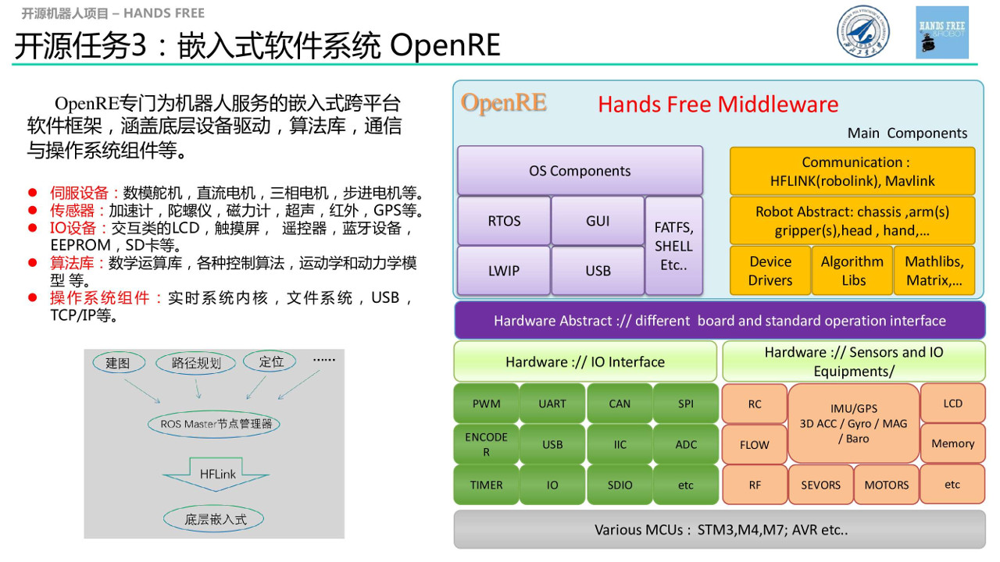

HandsFree OpenRE

OpenRE全称Open Source Robot Embedded Library ， 是一个专门为机器人写的、基于STM32系列微处理器的嵌入式开源库。经过不断优化，开源库变得鲁棒和通用，从而独立于平台成为一个专门为机器人而生的一个嵌入式库。
主要目的是搭建一个专门为机器人服务的嵌入式跨平台软件框架，涵盖底层设备驱动，算法库，通信与操作系统组件等，主要涵盖以下内容：
- 封装了许多传感器、存储器、输入输出设备的驱动包，并且采用硬件和驱动包隔离的方式，开发者可以轻易的跨平台移植，比如各种伺服设备、数模舵机、直流三相电机、各种传感器、加速计，陀螺仪、磁力计、超声、 GPS、一些交类互 LCD、触摸屏、 flash、 EEPROM、 SD 卡驱动等。
- 具有已经移植好的操作系统层功能，实时操作系统（ RTOS），图形库（GUI），网络协议（LWIP）， USB 协议，使用者可以根据自己的需求，选择合适的模板进行开发，省去了移植过程的繁琐操作。
- 具有很多机器人有关的算法库、 PID 控制包、机器人运动坐标变换包、卡尔曼滤波包、矩阵运算包、四元数等。
支持Linux环境下的makefile + QTCreator + armgcc来进行开发
获取OpenRE源码： OpenRE源码
OpenRE库使用makefile + QTCreator + armgcc来进行开发，相信熟悉makefile的都知道它有多方便，至于windows系统的开发者，也是可以配置windows下的makefile + QTCreator + armgcc的环境来开发的，windows下的keil的工程文件也将后续给出。
- 获取makefile的学习资料：makefile学习资料
在你正式进行OpenRE嵌入式机器人开发之前，你需要准备一些基础知识，例如会使用linux系统，会用git github管理自己的代码，会使用qtcretor，相关学习资料，HandsFre团队会陆续整理给出，详情请看Robotics-Learning